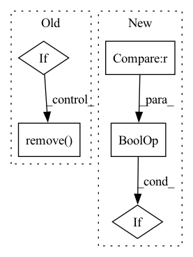

Pattern ID :27071
Before Change
order = list(order)
if not last_norm and "norm" in order:
order.remove("norm")
if not last_act and "act" in order:
order.remove( "act")
order = tuple(order)
module = LinearModule(dims[i], dims[i + 1], order=order, **_kwargs)
layers.append(module)After Change
if i == len(dims) - 2:
_kwargs["order"] = tuple(
o for o in _kwargs.get("order", ("linear", "norm", "act"))
if (o == "linear" or (o == "norm" and last_norm) or (
o == "act" and last_act)) )
module = LinearModule(dims[i], dims[i + 1], **_kwargs)
layers.append(module)In pattern: SUPERPATTERN
Frequency: 3
Non-data size: 5
Instances Fragment ID: 80600751
Project Name: yeliudev/nncore
Commit Name: 645c00cf1a43c46adf5be83891f2fbe02aa509df
Time: 2021-11-02
Author: yeliudev@outlook.com
File Name: nncore/nn/modules/linear.py
M Class Name: AnonimousClass
N Class Name: AnonimousClass
M Method Name: build_linear_modules(3)
N Method Name: build_linear_modules(4)
M Parent Class:
N Parent Class:
M File Name: nncore/nn/modules/linear.py
N File Name: nncore/nn/modules/linear.py
M Start Line: 82
M End Line: 120
N Start Line: 97
N End Line: 110
Before Change
print(msg)
os.system("rm " + weights) // remove partial downloads
if os.path.getsize(weights) < 5E6: // weights < 5MB (too small), download failed
os.remove( weights) // delete corrupted weightsfile
assert os.path.exists(weights), msg // download missing weights from Google Drive
After Change
r = os.system("curl -f " + url + " -o " + weights)
// Error check
if not (r == 0 and os.path.exists(weights) and os.path.getsize(weights) > 1E6) : // weights exist and > 1MB
os.system("rm " + weights) // remove partial downloads
raise Exception(msg)
Fragment ID: 80600729
Project Name: nightsnack/yolobile
Commit Name: ef133382c5ac2c1b5704b113c25c5cbf4786a7ce
Time: 2019-12-06
Author: glenn.jocher@ultralytics.com
File Name: models.py
M Class Name: AnonimousClass
N Class Name: AnonimousClass
M Method Name: attempt_download(1)
N Method Name: attempt_download(1)
M Parent Class:
N Parent Class:
M File Name: models.py
N File Name: models.py
M Start Line: 440
M End Line: 467
N Start Line: 439
N End Line: 465
Before Change
order = list(order)
if not last_norm and "norm" in order:
order.remove("norm")
if not last_act and "act" in order:
order.remove( "act")
order = tuple(order)
_cfg = _kwargs.get("msg_pass_cfg")
if _cfg is not None and _cfg["type"] == "GAT":After Change
if i == len(dims) - 2:
_kwargs["order"] = tuple(
o for o in _kwargs.get("order", ("linear", "norm", "act"))
if (o == "linear" or (o == "norm" and last_norm) or (
o == "act" and last_act)) )
_cfg = _kwargs.get("msg_pass_cfg")
if _cfg is not None and _cfg["type"] == "GAT": Fragment ID: 80600728
Project Name: yeliudev/nncore
Commit Name: 645c00cf1a43c46adf5be83891f2fbe02aa509df
Time: 2021-11-02
Author: yeliudev@outlook.com
File Name: nncore/nn/modules/msg_pass.py
M Class Name: AnonimousClass
N Class Name: AnonimousClass
M Method Name: build_msg_pass_modules(3)
N Method Name: build_msg_pass_modules(4)
M Parent Class:
N Parent Class:
M File Name: nncore/nn/modules/msg_pass.py
N File Name: nncore/nn/modules/msg_pass.py
M Start Line: 101
M End Line: 137
N Start Line: 116
N End Line: 131